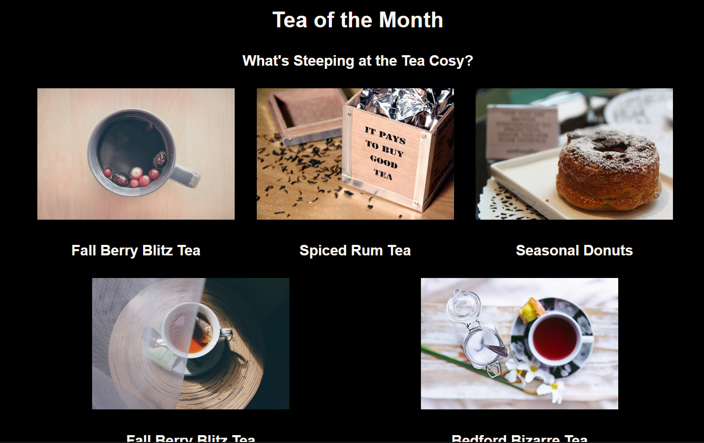

My Projects

In this project, I built a homepage for a fictional arts and crafts retailer. The end result was a responsive webpage with colourful styling and an easy-to-read layout.

In this project, I built a homepage for a fictional tea retailer. This website was also responsive and easy to read but used different forms of styling such as a banner over a background image as well as leaning on multiple flexbox elements to create a more aesthetically pleasing webpage.

A responsive website provising a comprehensive introduction to a fictional company, this time utilising a more modern method of styling.